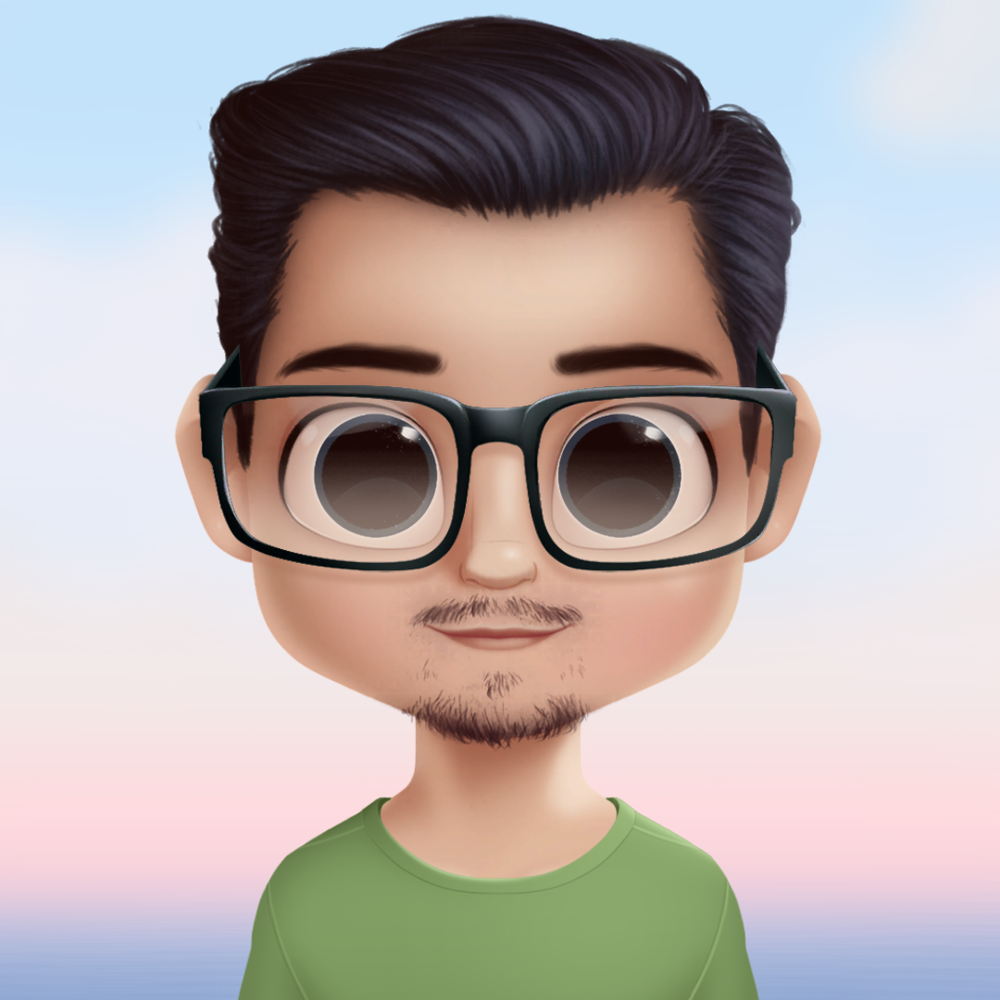

Siddharth Soni


About
Hi, I am Siddharth and I'm an ELectrical Engineering Student at Bikaner Technical University, Rajasthan. And I'm a pencil sketch artist also. In free time, I love to learn about electronics and sensors, building webpages, creating Photoshop arts, and make small Arduino projects using different sensors.
Experience
Data Scientist with Python Track